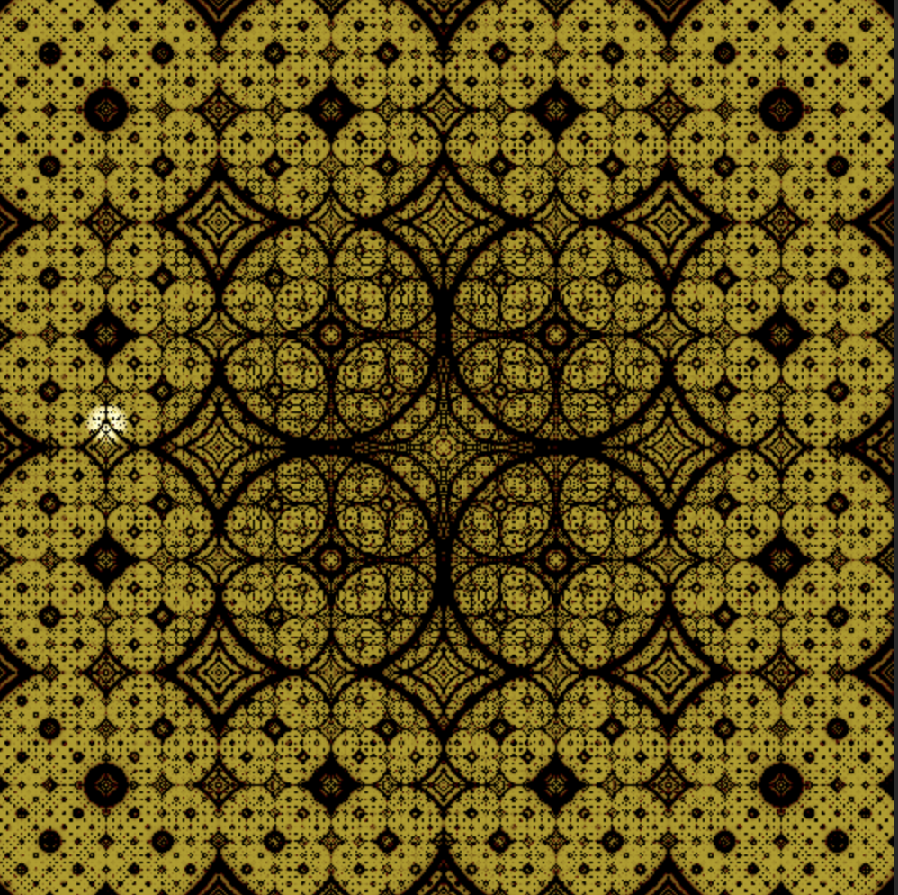
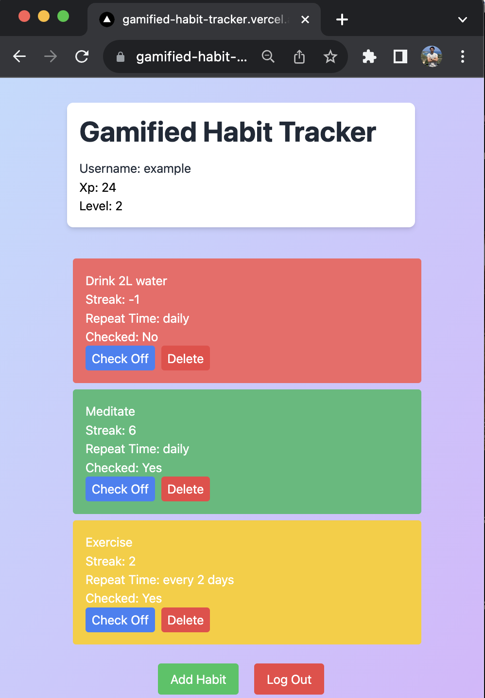

Hi, I'm Ahmet, a senior computer science student at NYU. I like making and playing games, programming, and football (soccer).
Below, you can find various projects I've worked on.
A third person shooter with both melee and ranged enemies. So far, the game includes:
I'm using Unreal Engine 5.1. The most of the core logic is in C++, with some parts extended in Blueprints.

Various graphics programming projects I've done as part of the Computer Graphics course at NYU, all projects work on the web.
A Unity project where I implemented some of the basic functionality of Kratos' axe. You can check the source code on Github. The project includes:
An Unreal Engine project where you shoot turrets with your tank before they shoot you. You can check the source code on Github.
An Unreal Engine project with simple shooting mechanics, you can check the project on itch.io.

A web-based habit tracker that allows users to create accounts, set habit frequencies, earn XP and level up based on habit adherence. Habit colors also adapt to reflect adherence levels. You can check the source code on my Github. And you can check the app here. I've used: